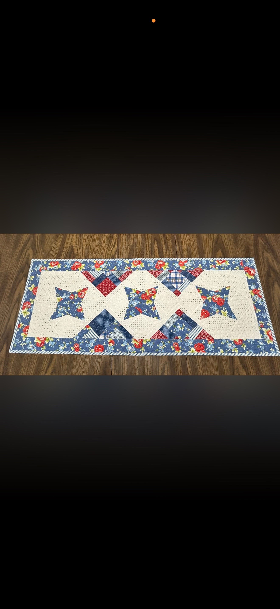
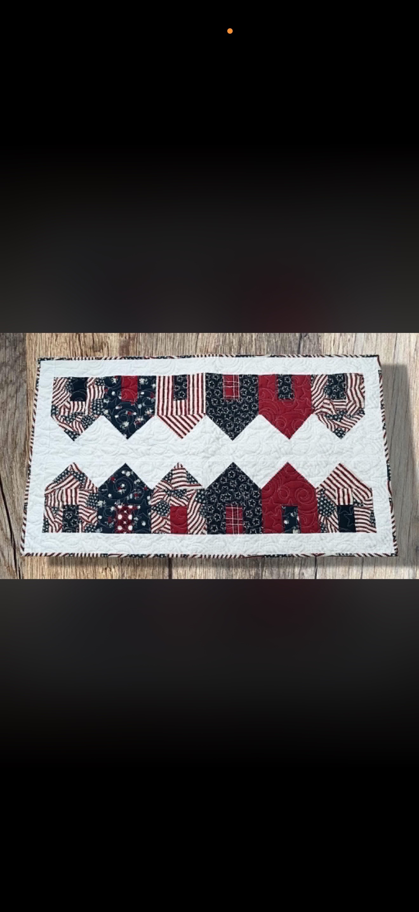
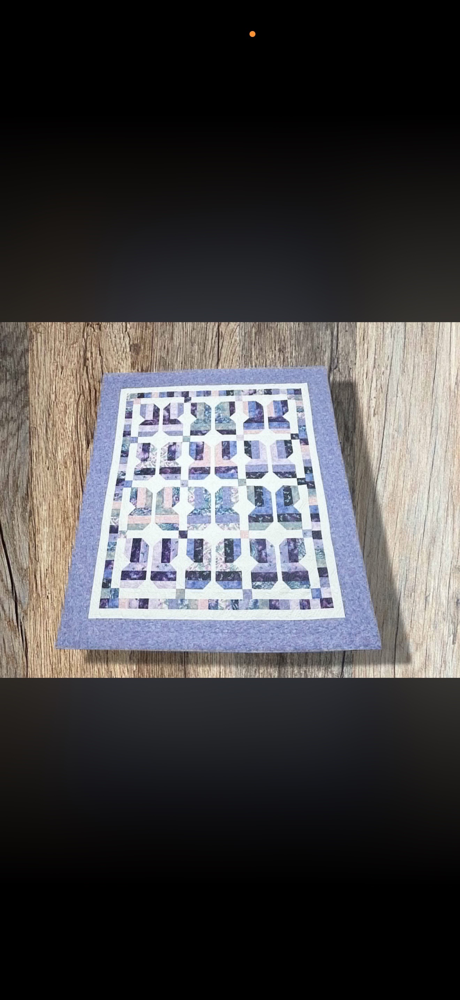
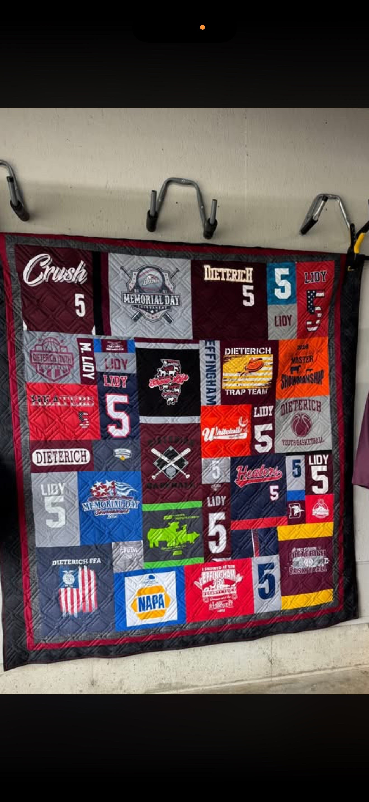
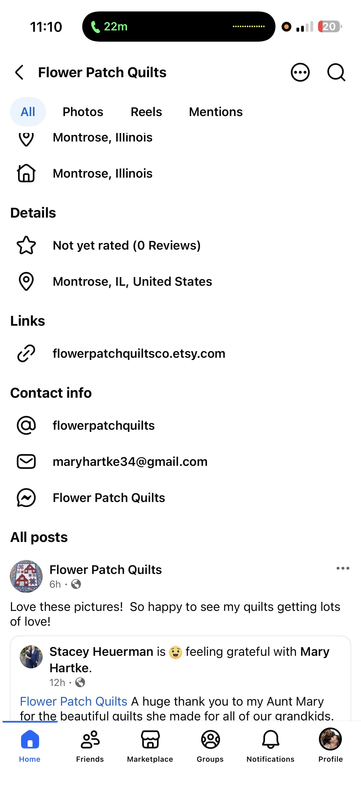

Montrose, Illinois
Custom Long Arm Quilting & Handmade Keepsakes
Flower Patch Quilts helps turn quilt tops, cherished clothing, and meaningful fabrics into finished pieces made to be loved for years.

Long Arm Quilting
Professional finishing for quilt tops
Memory Quilts
Special keepsakes from meaningful fabrics
Handmade Gifts
Seasonal pieces, runners, quilts, and more
Featured Work
Quilts stitched with care
Browse a few examples of handmade quilts, seasonal pieces, and keepsake projects.

Table Runners

Floral Quilts
Seasonal Favorites
What We Offer
Custom quilting services
Long Arm Quilting
Edge-to-edge quilting and finishing services for quilt tops.
Memory Quilts
Personal quilts made from shirts, clothing, or meaningful fabrics.
Handmade Decor
Table runners, seasonal pieces, gifts, and finished quilted items.

About Flower Patch Quilts
Small-town craftsmanship with a personal touch
Every quilt has a story. Flower Patch Quilts is built around careful stitching, thoughtful details, and helping customers create finished pieces that feel personal, useful, and beautiful.
Whether you need a quilt top finished, a memory quilt made, or a special handmade gift, each project is handled with care from start to finish.
Get Started
Ready to start a quilt project?
Reach out to ask about custom quilting, memory quilts, available handmade items, or pricing.
Email: maryhartke34@gmail.com